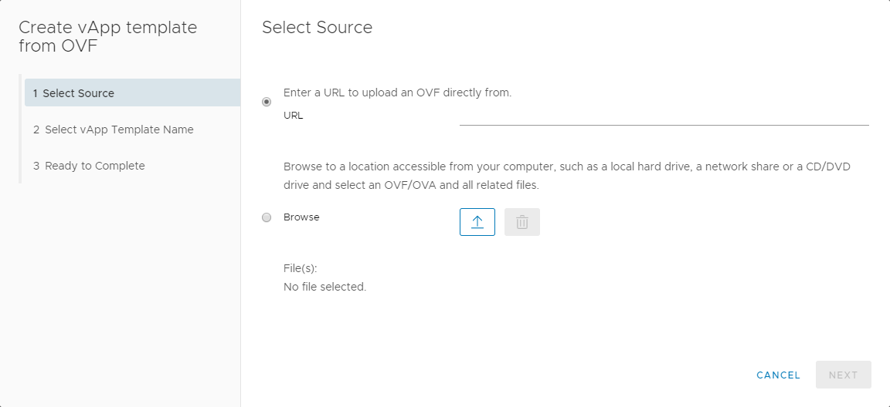
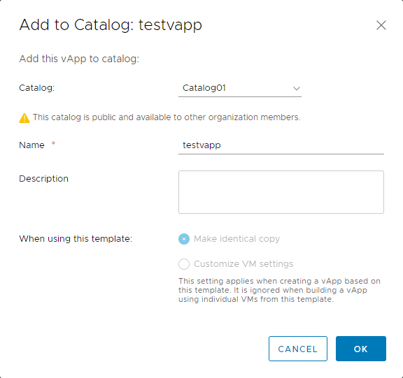

How to create a catalog
Overview
UKCloud provides a public catalog for you to use that contains standard virtual machine (VM) sizes and operating systems. The public catalog is a good place to start when you first deploy VMs into the UKCloud platform. However, you may want to create your own catalogs, containing specific applications or gold images, which you can then use to deploy VMs quickly.
Creating a catalog
The first step is to create an empty catalog:
In vCloud Director, click the menu icon and select Libraries.

In the left navigation panel, click Catalogs.

Click New to create a new catalog.

In the Create Catalog dialog box, Name the catalog and give it a Description if needed.
To specify a particular storage policy for the catalog, select the Pre-provision on specific storage policy option then select the desired Storage Policy:
Tier1 is for high performance, high IOPS VMs
Tier2 is for everything else less demanding (recommended for ISO and templates)

When you're done, click OK.
To make the catalog visible to others within your organisation, click the three vertical dots and select Share.
In the Share Catalog dialog box, click the Add button.

In the Share With Users and Groups dialog box, select:
Share with everyone in the organisation to add everyone in the organisation
Share with specific users or groups to add individual users or groups of users
You can give users different access levels: Read Only, Full Control or Change. Change allows users to change permissions.

When you've added all the people who you want to access the catalog, click OK.
When you're done, click Save.
Populating a catalog
There are two ways to populate a catalog:
Uploading an OVF package
To upload an OVF package and assign it to a catalog:
In the Libraries page, in the left navigation panel, select vApp Templates.

Click Add to open an OVF upload window.

In the Create vApp template from OVF dialog box, select the source of the OVF: either enter a URL or Browse for a local file.

Tip
You can select multiple files by pressing the CTRL key and selecting other files.
Click Next.
Review the details of the OVF template and then click Next.
Enter a Name and Description for the template and from the Catalog list, select the catalog in which you want to put the OVF. Click Next to continue.
Review the details of the vApp template and when you're done, click Finish to deploy.
Depending on template size and network speed, the upload may take some time.
Adding an existing vApp
To create a catalog from an existing vApp:
In vCloud Director, click the menu icon and select Datacenters.

Select the VDC where the vApp is located.
In the left navigation panel, click vApps.

In the card for the vApp that you want to add to the catalog, select Actions then Add to Catalog.

You can add both running and stopped vApps to the catalog, although it's worth noting that creating a catalog image from a running vApp could affect performance.
You can now choose the catalog you want to add the vApp to, give the vApp a new name, assign a storage lease, and define whether vApps deployed using this template are identical or customisable.
You can also overwrite an existing catalog item. If the catalog you are adding the vApp to is published externally, you'll see a warning.

When you're done, click OK.
A status bar will appear on top with the message: Please wait. You can close the window and check the progress by expanding the Recent Tasks section at the bottom of the vCloud Director interface.
Feedback
If you find an issue with this article, click Improve this Doc to suggest a change. If you have an idea for how we could improve any of our services, visit the Ideas section of the UKCloud Community.